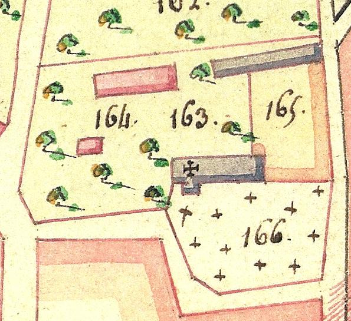

La cure de Vitotel de la révolution à nos
jours.

- 2 avril 1793 : vente des biens de la cure de Vitotel, comprenant les bâtiments, jardins et masures, herbes et fruits. Délabrement de l’église qui servira « à établer les bestiaux du Père Duvallet ».
- 1803 : la cure de Vitotel est rattachée à celle de Vitot pour le spirituel.
- 9 mars 1830 : partage Adam (entre 3 enfants) à l’Etude Paturel : Romain Adam (maire de Vitotel) devient le nouveau propriétaire.
- 1er mars 1860 : Louis Adam (fils) devient le nouveau propriétaire.
- 22 – 30 septembre 1886 : M. Boyer achète la cure.
- Vente de la cure à M. Victor Aimé Quillebeuf et Mme Joséphine Alexandrine Roulant, son épouse, demeurant au Prieuré au Neubourg.
- Jules Roger devient le nouveau propriétaire.
- Frédéric Roger hérite des terres situées autour de l’église et en
Janvier 2010 : Frédéric Roger fait don de la parcelle de terrain située à l’est, au nord et à l’ouest de l’église ce qui permet de reconstituer une partie de la cure.
- 1930 : démolition de la cure, d’un four à pain et d’une étable.